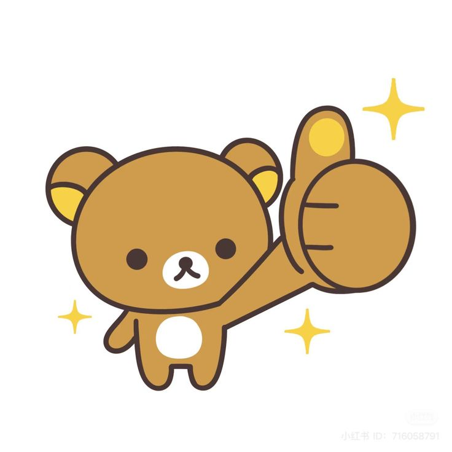

Rilakkuma a cute bear character created by the Japanese company San-X. His name comes from the words “relax” and “kuma,” which means bear in Japanese.
He’s always relaxing, lying down, or doing nothing, and that’s exactly what makes him so lovable. With his soft brown fur and sleepy eyes, he gives off a calm and peaceful vibe. Some say Rilakkuma is actually wearing a bear costume, but no one really knows what’s inside. He spends time with his friends Korilakkuma and Kiiroitori. Rilakkuma reminds us that it’s okay to take a break and enjoy the little things in life.